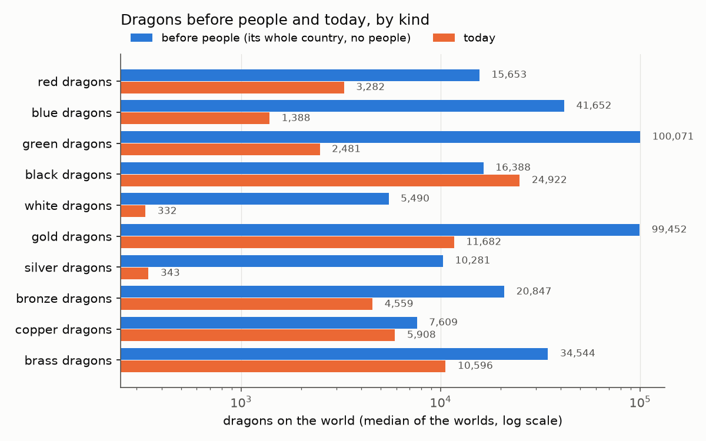
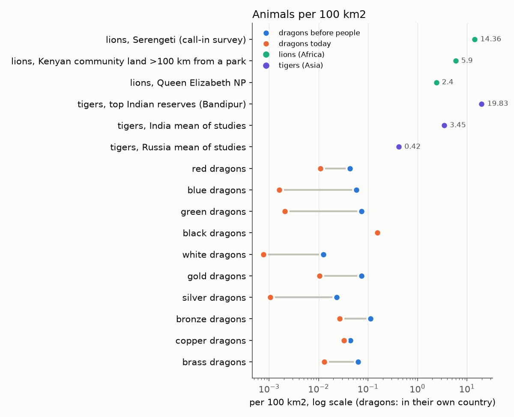

Owner's Desk
Good morning, Daniel. Overnight: your D20–D24 answers went into lanes, v1 is down to its release checks, and the "why so many humans" question has measured answers (your hunch about the human offshoots was right). Two calls for you below: the events system and one war question. The L8 world is at the top.
The L8 world
Ready to open. L8 world a16f5a (655,000 cells of ~30 km, seed 11) · its run 2c0c5d · compare with the L7 seed-11 world 2a7385. Four regional zooms and 75 highlights are in it.
What changed from the plan: it's a 100 Myr world, not 1 Gyr. The last 10 Myr, where climate is redone every 0.5 Myr, cost 90 of the 132 minutes. 1 Gyr would have run past your 8 hours. So read it as a resolution demo: same seed as L7, but different continents.
What L8 buys: far more small water. Lakes go from 44 cells to 1,913. Big rivers are 3x longer in total (107,000 km against 35,000). Coastline is 30% longer, with 50 small islands against 7. The finer grid makes small basins and pits that L7 smooths away. It's also cooler (13 °C mean against 19.5) and lower (highest peak 3,250 m against 5,730), but that's mostly its young age, not the grid.
Viewer: it doesn't chug. The globe holds 60 fps while turning. It's on screen in ~5 s (L7: 1.6 s), and a layer switch takes about 0.1 s. Switching to the flat map or relief takes ~1.2 s. Drawing only the visible half would gain nothing: the GPU is ~0.5 ms a frame, and the real costs were mesh building and the flat map, both fixed last night. L8 is about as big as one file can get in Chrome (440 of ~536 M characters), so L9 would need the binary layers ticket.
Cost: 132 min to simulate, then 14 min to slice and 39 min for a 60 kyr ice-age pass. Peak memory 15–18 GB. The make estimates were ~5x low (now a ticket).
Peoples on it: run 1294d0 (D&D tree, one try, 65 min,
much faster than the 4–5 h guess). It ran on the peoples code from before D20 (D27 below), so it's the old human-heavy mix. Humans
hold 110 Mkm², and their farmer, herder and nomad groups lie over the same land again (the stacking that D20 removes). Halflings 46,
dragonborn 34, hobgoblins 19, orcs 14, tabaxi and kenku 13, kobolds 9, elves and gnomes 8. The server answers for it, but I haven't
opened it in a browser at L8 yet. On the D20 code (run b9edf5, 46 min): a very different world. Hobgoblins
lead with 49 Mkm². Humans and their groups (nomads 32, plain humans 28, farmers 20, herders 16) total about 96, against about 410 on the old
code. Orcs have 28, bugbears 21, half-orcs and steppe orcs 20 each, lizardfolk 19, hill giants 16, halflings and kenku 13. Kobolds are down to
4.6. One try on one world, so it's a taste, not a verdict. It shows goblinoids filling what humans used to hold, which feeds D27's questions. For comparison, the L7 peoples are
run 57b95b.
Notes: docs/review/l8-world/notes.md.
What the L8 world taught us (lane 96)
A read-only look around world a16f5a, compared with the L7 world and with Earth's own relief resampled to the same grids. Full write-up:
docs/review/l8-world/explore.md.


- Your spot is a shallow sea flooding part of a whole continent, like Hudson Bay or the old American inland seaway. It isn't a sunken plateau like Zealandia. The sea rose 312 m over this run, because young ocean floor rides high after a supercontinent breaks up. That part is plausible and looks good.
- The sharp edge is a real gap, and it's in L7 too. The continent ends in one cell: 26 km of crust at −441 m, then ocean floor at −4,200 m. On Earth, resampled to the same grid, 18% of the ocean lies between 200 and 3,000 m deep (the slope and rise). Here it's 5%, and the L7 world has 11%. The coast is 90 km from 3 km depth here, against 360 km on Earth. Stretched crust that thins over 50–200 km, and a mud apron at the foot of the slope, are missing (PW-950).
- A bug that L8 exposed: inland pits count as sea. Ground below 0 m counts as ocean even 800 km inland, so the world's "largest river" ends in a puddle, and so does its highlight and regional zoom. L8 has 225 such pockets. The L7 world has 41, drawn as deep pits of ocean (PW-1229). Fixed and merged: by my count, 142 of a16f5a's pockets become land, and 17 of the 21 big rivers that ended in one, including the largest, now run on. This world and its zoom get rebuilt with the showcases.
- Good at L8: rivers branch like real drainage, 9.5% of land drains inland (Earth ~18%, L7 2%), small islands match Earth's count, and the coasts are ragged with mangroves and tidal flats.
- Off: the land rose with the sea, so 6% of land is within 10 m of sea level (Earth 1.4%) (PW-1230). Mid-sized islands (10,000–100,000 km²) number 11 here against Earth's 44 (PW-1231). 3D relief draws a fake diamond lattice on shallow seas (PW-1228). The "40 times L7's lakes" figure is mostly one giant salt lake.
The first tag, v0.1.0 (the v1 milestone): where it stands
Your ruling: the v1 milestone (tag v0.1.0) is the planet, physics good enough to fool a layman and impress a climatologist or geologist.
Peoples ship as a preview. Plan: docs/review/v1-cut/plan.md.
| Step | Status |
|---|---|
| 17 non-blocking tickets moved to v2 (physics polish, all peoples items, two viewer items); PW-508 to v2 (your call) | Done |
| Docs: star section, overview section 3 regenerated, 2.6 rewritten (PW-814, PW-816) | Merged, 858 tests pass |
| Release checks (PW-825): L7 Earth check (71% climate-group agreement, global 13.9 °C and 996 mm against 14.0 and 983 observed); scorecard on 6 seeds (71%); the L7-drier pairs (L7 only ~2 points drier now) | Done, all as expected |
| Hard-bar tally: 36 L6 + 6 L7 draws (cause found). Frozen over 0, boiled 0, ocean loss 0, CO2 crash 1 (L6). Soft pass 81% at L6 (29 of 36), 5 of 6 at L7 | Clear under your D32 B (crash = CO2 below where plants can live; the worst draw is 85 ppm). Lane 102 is confirming on the final code |
| Showcases rebuilt on final code, full test suite, state page, close PW-244 and PW-1119, tag v0.1.0 | After the checks |
Report: docs/review/v1-cut/checks.md. Everything passed except one world in 42, so the tag waits on the plant fix (lane 95). If it fails, the crash goes to v2 and we tag.
Why humans hold two thirds, and why there are no elf continents
Lane 84, measured by switching one thing off at a time (D&D preset, seeds 7, 10, 13; humans at 67%). Report:
docs/review/peoples-why/report.md.
| Cause | Points of human share | Plain words |
|---|---|---|
| Density | 32 | Humans live at about 10 per km² (farmers 12) from 200,000 years ago, before anyone farms. Everyone else averages 1.4. Humans hold only 21% of the peopled land. |
| The contest's edges | 19 | Five rules that favour the denser, expanding people. Each covers for the others, so none alone is worth more than 4. |
| The human offshoots (your hunch) | 16 | Farmers, herders, seafarers and so on each make a full claim on the same land, so a human cell is filled about 1.3 times over. They should share one capacity and differ at the deme level. |
| Boats | 8.5 | Only humans leave their cradle continent by sea, and they win where they land. |
| Density follows the land | 6 |
- Continents are already blocky (2–3 peoples make 90% of a typical one). The trouble is who holds them: humans lead 6–9 of 10. Cut the humans down and your picture appears by itself: kobold, kenku, dragonborn, halfling, hobgoblin and orc continents.
- "Fit decides the contest" needs a cost for being a generalist. Human habitat scores 0.82–1.00 in nearly every other people's best country (dwarves and goliaths are the exception), so "who fits better" barely ever says "not the humans". Lane 83 is building it with a jack-of-all-trades cost or fit by preference.
- The 40× "brittle" swings are mostly the difference between two test worlds. On one world they move under 3×, except halflings, which flip all or nothing on whether they get their founding land before human boats arrive.
- Dragons in farmland keep 9% of their numbers. About 42% of the loss is food (hunting and overkill of the wild herds, with livestock giving about half back) and 58% persecution, rising to 93% where farmers are dense.
- War between peoples doesn't exist yet. Peoples only compete for room. See D26.
All of this has gone to lane 83 (your D20), which now takes on one capacity per people, density by era and way of life, sister peoples born on different continents, and a home-ground edge.
Decisions waiting on you
Your answer: more dragons, B and/or C for how they lose ground, a per-run lever, and the 10-farmers anchor isn't what you want. Lane 103 is doing one round on exactly that (below is the evidence it starts from).
Why there are 10× more dragons than lane 90 measured (lane 99): it's their range, not weaker hunting. Your D20 peoples hold much less land. Humans' cells fell from about 14,800 to 4,000 and kobolds' from 9,600 to 400, so dragons now live in about 5.5× as many places. D20's first change (a new people founds at one spot, and a dying stem's land is left empty) does most of it. The hunting rate was set from a stated density ("10 farmers per km² keep 10% of dragons"), not fitted to the old peoples, so I left it alone. The new count is the model's honest answer.


Against your lions and tigers: lions keep 6–13% of their old range, tigers under 7%. Six dragon kinds keep 4–14% of their country at a tenth or more of their pre-people density (red, blue, green, white, gold, silver). Bronze, brass and copper keep about 30%, black 68%. India loses about 76 people a year to tigers and Tanzania about 38 to lions (1.3 per million). 35% of people live in dragon country. If dragons killed like Indian tigers per animal (my assumption, not a model output), that's about 1,500 deaths a year on a world, around 15 per million people in range. So meeting a dragon is rare, but you'd hear of one in your lifetime.
Your B is merged: sea food (seals, fish and seabirds from the ocean's productivity) for white, bronze and blue. White dragons ×1.9, bronze ×1.6, blue ×1.4. The cold kinds are now in the hundreds per world, not a handful.
Still open, for when you look closer: how dragons lose ground to people. Today the kill thins them everywhere and never clears a place. Lions and tigers instead vanish from farmland and stay dense in the wilds.
- A keep it. The shares already match the cats for most kinds. My lean for now.
- B local extirpation: dragons fade from a cell where the kill would outrun their breeding. That gives the lion pattern, never species-ending.
- C habitat avoidance: dragons read busy country as poorer. That gives the same pattern through habitat, not killing.
Report: docs/review/dragon-numbers/report.md, with every figure flagged read, secondary or my arithmetic.
Running now
| Lane | What |
|---|---|
| 102 · final tally | Re-running all 42 test worlds on the final physics code (plant fix plus inland pits), counting crashes under each D32 option, so your answer can go straight to the tag. It also settles whether the inland-pits fix really made worlds drier. |
| 95 · plant floor | Your D29 = C: plants that starve for CO2 stop speeding up weathering. Screen of the 6 low draws, then the full tally with every draw's lowest CO2, so you can set the crash line. If it fails, it goes to v2. |
| 101 · peoples | Your D31 A: in-fighting for every people, humans included, scaled by crowding; a floor so no brake ends a people; your A as a reported check. Then it stops until war and polities. |
| 100 · continent edge | Round 1 done, parked on its branch until after the tag. Cause found: a continent splits into two rigid plates at once, so its edge barely stretches. Built crust that thins over about 200 km, plus a mud apron at the slope foot. Cliff coasts fell from 23% to 15% at L6 (Earth 3.5%) and from 20% to 9% at L7. What's left is the shelf's sediment front, which is still a one-cell wall. Next round: give that front a real slope, then judge on all draws (3 of 11 draws dipped to 69–85 ppm CO2, probably chance). |
| 103 · dragons round 2 | Why dragons are so sparse even before people (checked against body-size rules for big predators, and whether all ages are counted). The 10-farmers anchor is replaced by local extirpation and/or avoiding busy country, and a "dragon abundance" dial goes in the viewer. One round. |
| 104 · L7 → L8 overnight | Your ask: refine a finished L7 world to L8 (and try L9) instead of simulating at L8, then compare it with the direct L8 world. |
| 105 · L8, 1 Gyr | Your ask: the same seed-11 L8 planet, but 1 billion years, held to 8 cores. Rough guess: 5–8 hours for the run plus the slice, by lane 86b's per-Myr speed. Notes as it goes in docs/review/l8-world/gyr-notes.md. |
| 106 · workbench | Cultures (city kobolds, human varieties) off the species tree and timeline, display only. Why they stay in the model: these "groups" (human farmers, herders, seafarers, nomads; steppe and forest orcs; hill dwarves; city kobolds) are simulated. Each holds its own land where its way of life beats its people's, and they carry things the cookbook needs: herders' milk tolerance and seafarers' coasts, plus town quarters in settlements and tech inherited through the tree. Demes are different: regional populations worked out after a run (where a people splits, fuses or dies out), used only to place settlements. Neither is the coming cultures work. |
| After the tag | Showcases rebuilt on final code, then the space-to-ground globe's first try (PW-1198). |
Your seven peoples runs are unchanged: cc22df (s7) · 622c00 (s8) · bf5398 (s9) · 3d9b5f (s10).
Settled overnight
- Tags are 0.x: the first tag is
v0.1.0(the v1 milestone), then v0.2.0 for v2, and so on. - Your D28 question, answered: "a dying people’s land is left empty" is the evolution track. When a stem (e.g. archaic humans) ends at its last split, its land goes to no child; the children spread into it. It is not one group replacing another on a continent. Your mortality hunch is with lane 103.
- Your 10-31 evening answers: D32 B (the crash line is where plants can no longer live, so the 85 ppm world passes); D31 A, humans in-fight too, and peoples-share work pauses until war and polities; D28 more dragons with a lever (lane 103); L8 refine overnight (lane 104).
- Dragons D28 B merged (lane 99, 886 tests pass): sea food for white, bronze and blue; the census and the lions-and-tigers comparison are in the D28 card.
- CO2 plant fix merged (lane 95, 884 tests pass): L6 crashes 2 → 1 of 36, the crash world 36 → 85 ppm, soft pass 28 → 29 of 36. It adds no dryness (the drier scorecard came with the inland pits). Report:
docs/review/v1-cut/plant-floor.md. - Peoples D27, D25, D26 merged (lane 97, 882 tests pass): founding at 3 sites on one landmass, the four raider brakes with viewer dials
raidersandwar, dwarves resist disease at 0.75 (this takes effect once the plague code reads it), and enemy pairs log "hunt" events on their shared border (about 600 over a full history; numbers unchanged). - Inland pits fixed (lane 98, merged, 877 tests pass): ground below 0 m counts as sea only if it reaches the ocean. Otherwise it fills to a lake or stays a dry basin. Side effects: Earth's Atlantic was missing the Amazon's water, so an old "overturning passes" result was false (a v2 ticket now). One L6 scorecard draw came out drier, which is probably chance and gets re-checked in the final tally.
- D30: inland pits go into v1 if the fix is quick; the continental slope stays v2, since it already failed a round. When physics lanes are idle, I pick the most useful physics work regardless of version.
- Your 10-31 answers: D25 (1 B; 2 A+B+C plus in-fighting; dwarves 0.75; portals later; item 5 awaits graphs), D26 B then A, D29 C, D27 to my judgement plus your spread-founding idea. All in lanes 95 and 97.
- Merged: your D20 peoples fixes (lane 83) and the dragon food chain (lane 90), 868 tests pass.
- D20–D24 answered and in lanes: D20 and D23 (hunters' density, overkill by co-evolution) in lanes 83 and 90; D21 fixed portals for now; D22 virgin soil off, events designed (D25); D24 keeps 0.5%.
- The v1 milestone means the planet; PW-508 to v2; the 25% glacial-maximum line closes at the tag; the tally runs.
- New epics: space-to-ground globe (PW-1198, first try right after the tag, half the CPUs and the GPU, hard-capped with
taskset); export targets Minecraft / Dwarf Fortress / Valheim (PW-1200, v3); a walkable setting (PW-1199) in the new v4 milestone. - Your PHB and DMG are in
docs/references/dnd/(git-ignored, never committed), searchable by page withtools/rulebook.py. - Viewer at L8 merged: globe mesh built once into typed arrays, layer switches recolour only, the flat map built on first use (layer switch on the L8 flat map 2.7–5.3 s → ~0.1 s).
- The finest-timescale drought gap is a v2 physics ticket (PW-1171).